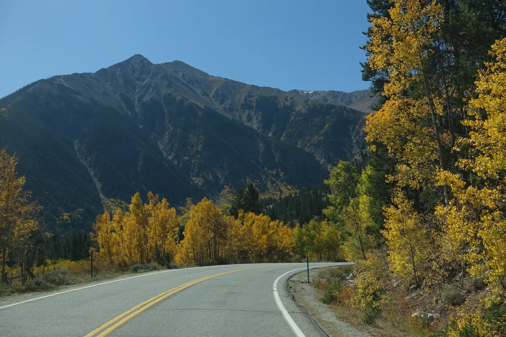

Slow Lane
In early October, the highway from Twin Lakes up toward Independence Pass comes with double yellow lines down the middle and yellow aspens on both sides. The lakes glittered at the foot of the Sawatch Range, then the road began to climb, and every bend opened onto another grove against dark spruce. The curve signs asked for 20 miles an hour, the perfect speed for gawking through the Jeep's windshield. A grove is often a single organism, every trunk sharing one root system, which is why the slopes come in patches, each turning gold on its own schedule. I like the idea that a whole hillside can be one connected thing.
Independence Pass tops out at 12,095 feet, and the gates usually close for the winter in early November. Anything over 35 feet long is banned from the road, so leave the RV at home. Legend says the pass got its name from the Fourth of July: on Independence Day, 1879, prospectors struck gold on the Aspen side, and the camp that sprang up took the name Independence. The ghost town still sits just below the summit. The miners had to dig for their gold. I only had to look up, and mine grows back every year.


Two days earlier the gold had been closer to the ground. After a stop at a pine-fringed reservoir, gravel two-tracks led me up into the high country, where willows glowed yellow and rust around a still tarn under a gray peak streaked with snow. As the sun dropped, the sky turned pink and teal, and the Jeep sat on a rise against the glow, a tiny dark shape under a very big sky. I still can't decide which I liked more, the aspens along the road or the willows at dusk.